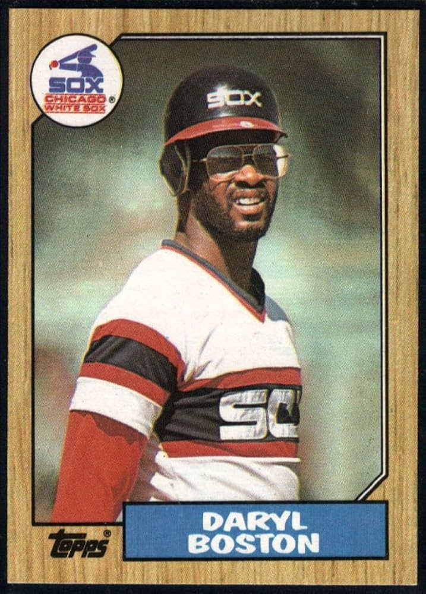

Daryl Boston
Career Highlights & Facts
- Daryl Boston was originally drafted by the Chicago White Sox in the 4th round of the 1981 Major League Baseball draft.
- He was a member of the inaugural Colorado Rockies team in 1993, playing in 117 games for the expansion franchise.
- Known for his strong defensive skills, particularly his powerful throwing arm in the outfield.
- Following his playing career, Boston transitioned into coaching, serving for many years as an outfield and first base coach for the Chicago White Sox.
The Original Clue